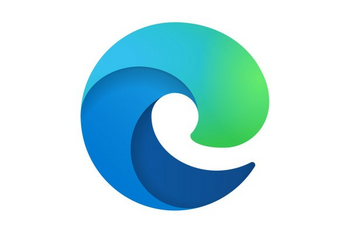

Llevo un par de semana utilizando Copilot de Edge y hay que reconocer que tener esta opción integrada en tu navegador es un factor muy diferencial sobre el resto de navegadores. También es cierto que a nivel de privacidad da un poco de mal rollo, pero cuando utilizas esta opción, te das cuenta que hay un antes y un después en el uso del navegador y piensas que le puede hacer mucho daño al monopolio que tiene montado Google con Chrome. Veremos a ver como la gente de Google integra todo esto en sus productos y como funcionará, si iguala o mejora la experiencia.

Copilot de Edge es una herramienta que te permite usar el chatbot de Bing con ChatGPT desde el navegador. Como sabes, ChatGPT es una inteligencia artificial que puede conversar contigo sobre diversos temas y ayudarte con algunas tareas. Para hacer uso es necesario tener una cuenta de Microsoft y puedes desplegarlo haciendo clic en el botón de Bing en la esquina superior derecha de Edge y abrir el panel de Descubrir. Allí podrás ver tres pestañas: Chat, Componer e Información. La pestaña Chat te permite hablar con ChatGPT (sin límite en la conversación), la pestaña Componer te ayuda a escribir contenido usando sugerencias de ChatGPT y la pestaña Información te muestra datos de Bing sobre el sitio web actual.
Puedes habilitar el contexto de página en Edge siguiendo estos pasos:
Publicado por Angel el Saturday 25 March del 2023
También te puede interesar:
Powered by org-bash-blog
Written in OrgMode with Emacs and converted to HTML with Pandoc

Este obra está bajo una licencia de Creative Commons Reconocimiento-NoComercial-CompartirIgual 4.0 Internacional.